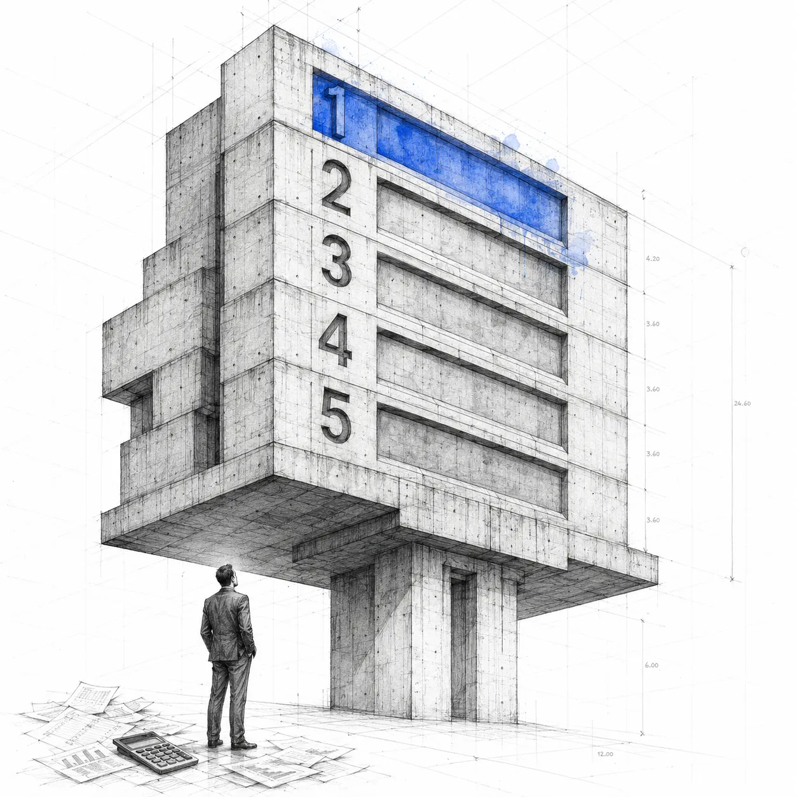
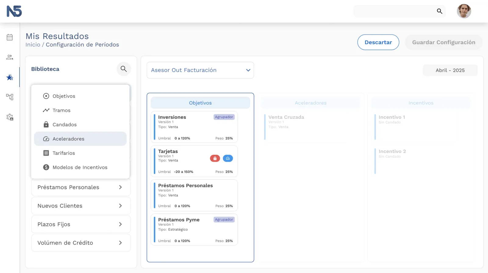
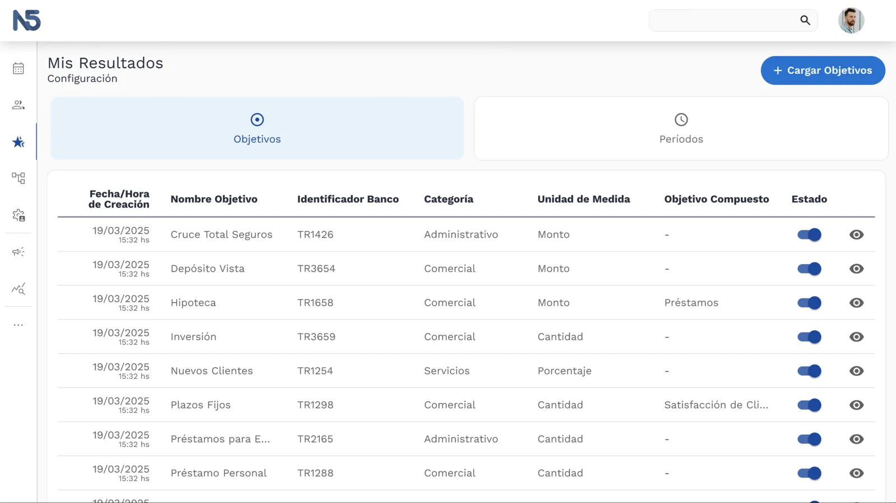
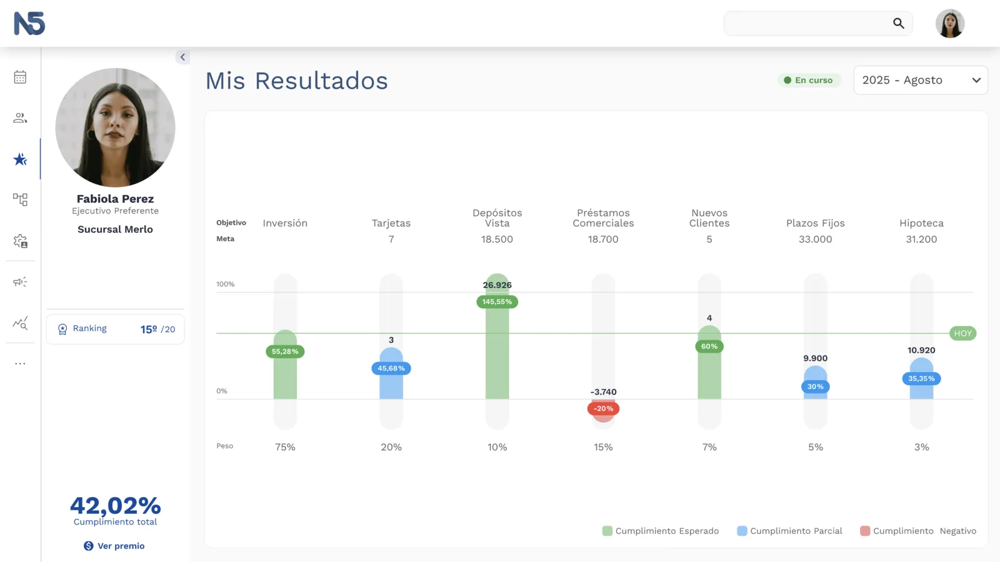
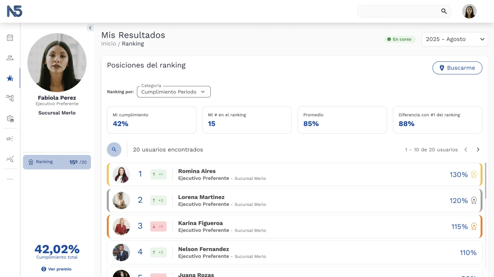
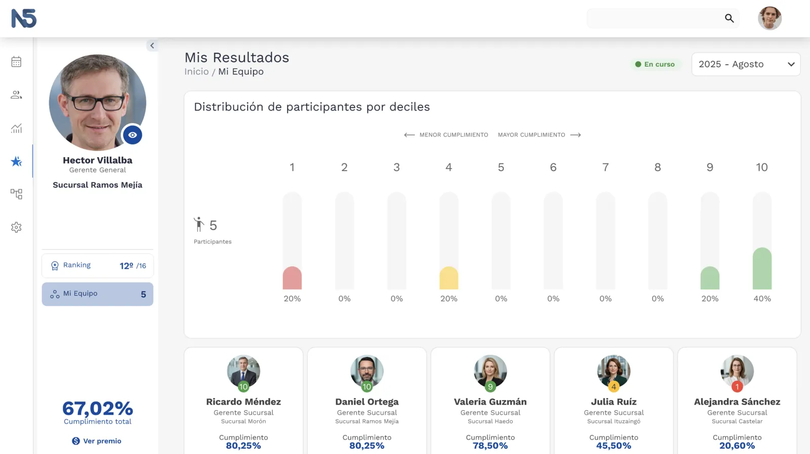

Mis Resultados: del parche al producto
Un módulo para gestionar performance comercial en bancos. El reto real no era la interfaz — era entender la dimensión verdadera del problema y decidir qué no construir todavía.

Los bancos tienen equipos comerciales grandes, con metas, rankings e incentivos que cambian todos los meses. El problema es que gestionar todo eso es un caos — planillas de Excel, configuraciones manuales, información dispersa. Nadie tiene una visión clara de su propio desempeño en tiempo real.
La primera versión de esta plataforma existía, pero estaba diseñada para resolver los problemas puntuales de un banco específico. Sin módulo administrador, la configuración de objetivos y metas debía hacerse a mano cada mes — un costo enorme que asumía internamente el equipo de soporte. No era un producto, era un parche.
Cuando me metí a fondo con el PO a analizar el scope real del proyecto, lo primero que quedó claro es que el problema era mucho más grande de lo que parecía. No se trataba de mejorar pantallas — se trataba de construir una plataforma que pudiera implementarse en cualquier banco, con reglas de negocio distintas, estructuras organizacionales distintas y modelos de incentivos distintos.
Eso cambió todo el enfoque.
El análisis nos llevó a definir tres perfiles de usuario con necesidades completamente diferentes: el Vendedor, que quiere saber cómo va respecto a sus objetivos; el Supervisor, que necesita ver el desempeño de su equipo; y el Administrador, que configura las reglas del sistema.

Feature map del Vendedor — acotado, directo.

Feature map del Administrador — el contraste habla solo.
El módulo administrador resultó ser el corazón del problema. Sin él, el sistema no puede escalar: alguien siempre tiene que configurar algo a mano. Pero diseñarlo correctamente era enormemente complejo — y acá está la diferencia con cualquier sistema de incentivos tradicional.
Un sistema de loyalty para una tienda de ropa es relativamente directo: vendiste X, cumpliste la meta. En banca, las reglas son otra cosa. Si el objetivo de un ejecutivo es vender 15 tarjetas en el mes y vendió 15, pero 3 clientes cancelaron, su resultado real es 12. Y eso es el caso más simple. Si además 3 de esas tarjetas las vendió un ejecutivo de call center a clientes que figuran en su cartera, la cuenta puede ser media tarjeta, una entera o ninguna, dependiendo de la regla del banco.
Cada banco tiene su propia versión de esa lógica. Cubrir todos los casos posibles sin que la interfaz del administrador se volviera inmanejable era el desafío real del producto.

Wireframes de la v1 en Adobe XD — la arquitectura de información antes de las pantallas.
Se vendió el proyecto para implementarlo en un banco grande de Perú. El scope era ambicioso, el tiempo ajustado, y las partes no encontraron la flexibilidad necesaria para avanzar. El proyecto quedó trunco.
Para dimensionar lo que implicaba resolver el administrador correctamente: el panel de configuración de un solo objetivo requería manejar tramos de cumplimiento, candados de activación, aceleradores de pago, tarifarios diferenciados por producto y modelos de incentivos cruzados entre equipos. Todo eso conviviendo en una sola pantalla, sin que el usuario se perdiera.

El sidebar de configuración de un objetivo: Objetivos, Tramos, Candados, Aceleradores, Tarifarios, Modelos de Incentivos. Cada nodo es una pantalla.
Cuando arrancó la v2, la pregunta fue cómo avanzar sin repetir el mismo error. La respuesta fue una decisión estratégica simple: empezar por donde hay más valor inmediato y menos riesgo de complejidad infinita.
Se priorizó Mis Resultados — el visualizador de performance para vendedores y supervisores. El módulo que más impacto tiene en el día a día del usuario comercial. Y para el administrador, en esta primera instancia, se optó por templates de Excel que mapean la configuración directamente al sistema — un puente pragmático que permite operar sin bloquear todo el desarrollo en el problema más difícil.

El configurador MVP: Excel como interfaz de administración. No es la solución final — es la solución correcta para este momento.
Una plataforma que permite a los equipos comerciales de un banco ver su performance en tiempo real — objetivos, resultados, rankings, estado de incentivos — sin depender de reportes manuales ni de alguien que actualice una planilla.

La pantalla principal del Vendedor: objetivos del mes, progreso en tiempo real, estado de incentivos.

Ranking del equipo — otra dimensión del desempeño.

Vista del Supervisor — el sistema cubre los tres perfiles.
Lo más valioso de este caso no es el producto en sí, sino el proceso de entender dónde estaba realmente el problema. La v0 resolvía síntomas. La v1 encontró la dimensión real del desafío. La v2 tomó la decisión más difícil: acotar el scope con criterio, sin perder de vista hacia dónde tiene que ir el sistema. Hoy está en producción en Panamá, en implementación en Chile, y próximamente en Brasil.